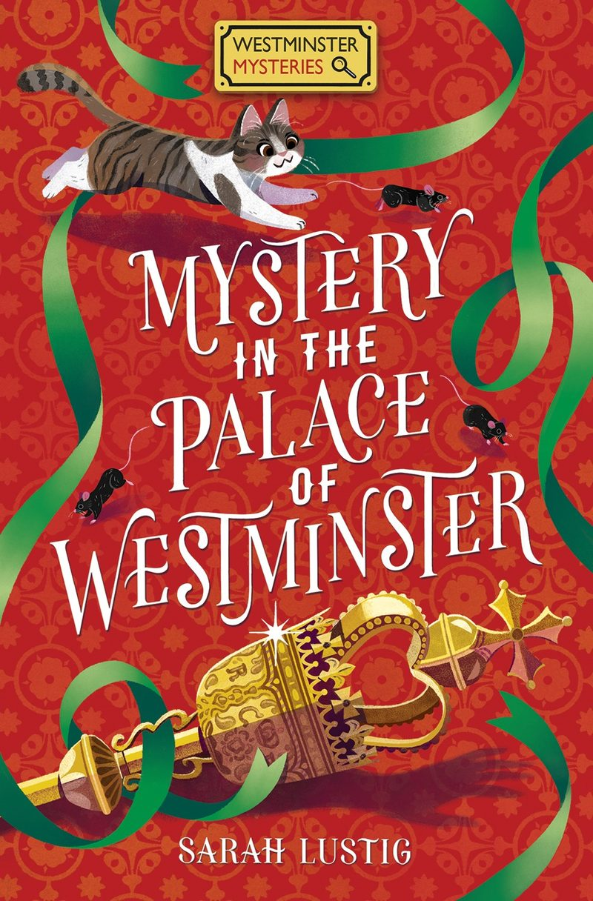

Book one
Mystery in the Palace of Westminster
When the parliamentary mace is stolen from inside the Houses of Parliament, Theo is determined to help his dad get it back. But he can't do it alone. And when help is offered, there's a problem. It comes from the new girl at school, Sammy Jhor, who's a supporter of the opposition party.
Paperback, 272 pages. Highly Commended, Selfies Children's Book Award 2023.